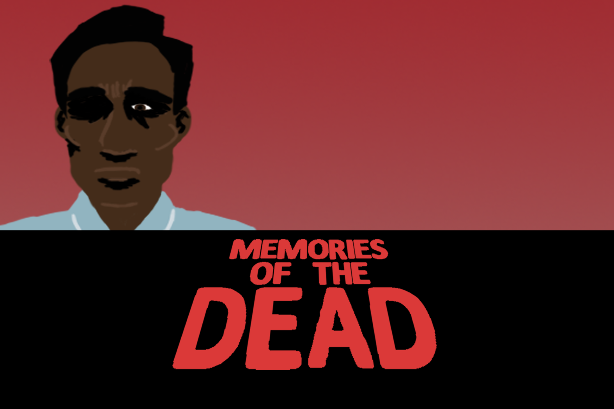

Memories of the Dead May 2016

A top down shooter prototype starring the living and the living dead.
Unity, PC
My first Unity videogame project, created over roughly 50 hours and requiring a whole lot of blood, sweat and tears (but mostly blood). Inspired by George Romero's Living Dead movies, this top-down shooter was supposed to be an in-depth narrative experience, but over the course of the project I toned down my scope and made a short gameplay prototype with a robust set of mechanics and some effective level design.
Project Features
- Three levels with unique gimmicks.
- Stealth mechanics with line of sight and sound-based detection.
- Intuitive mouse-only shooting and reloading controls.
- Health mechanic with an extra "Bitten" state.
- Scoring system that gives the player a letter grade based on performance at the end of the level, including bonuses for achieving certain criteria.
- Boss battle with different gameplay to other enemies.
- Self-produced art, animation, UI, and sound effects.
Download Game (.zip)
Screenshots